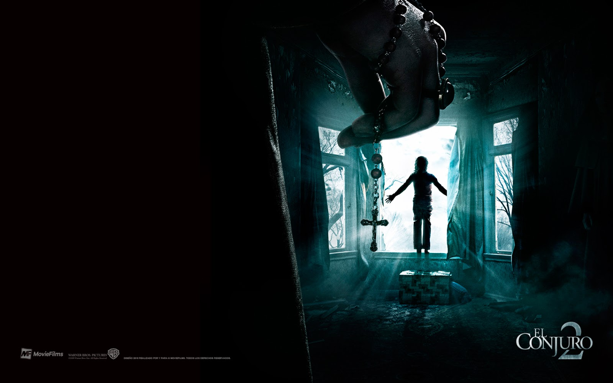

El Conjuro 292% de coincidencia 2 h 15 minEd y Lorraine Warren, renombrados demonólogos e investigadores de lo paranormal, se enfrentan de nuevo a las fuerzas infernales. En esta ocasión, viajan hasta el norte de Londres para tratar de ayudar a una madre y sus cuatro hijos.REPRODUCIRTRAILERProtagonistas: Vera Farmiga, Patrick Wilson, Madison Wolfe. Genero: Terror.
 TRAILER
TRAILER